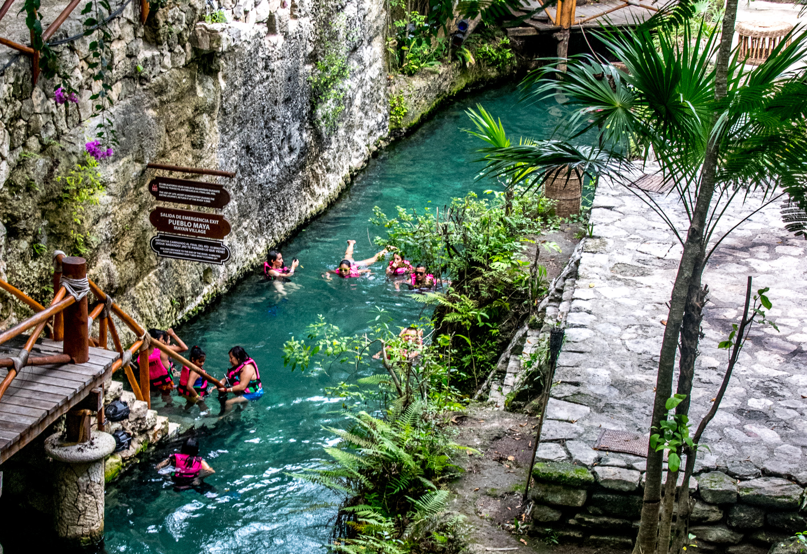

My Favorite Vacation

This is a picture of Cancun, Mexico. I went there for my fifteenth birthday and it was an amazing experience. The beaches were beautiful and the water was crystal clear. I would love to go back someday!
What I Liked About Cancun
I really liked how nice the people were and how welcoming they were to my family and I.
I also enjoyed the food, like the fresh food that was served each day, and we could choose what kind of food we wanted to eat. For instance, we could eat Mexican food, Asian food, and Italian food.
My family and I traveled to Xcaret Park, which is a zoo and entertainment zone, where we saw many kinds of animals. Also, there was a show at the end that showcases the history of Mexico, which was very beautiful and I learned a lot of the history of Mexico.
We swam in many different places, such as: the beach, cenotes, and rivers. The water there was very beautiful and clear.